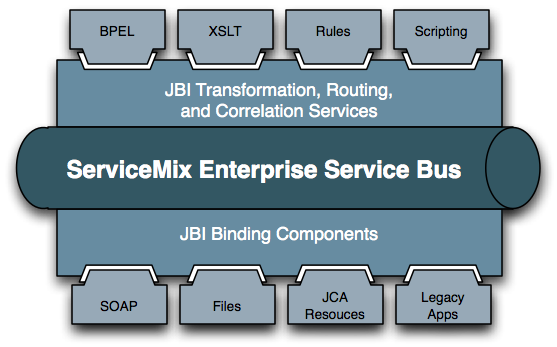

|
|
|
|
|
|
|
Download | JavaDocs |
OverviewCommunityDocumentation
ReferenceFeatures
Integration
ComponentsToolingRelated ProjectsSupportDevelopersTools we use
|
Apache ServiceMix ServiceMix is an open source distributed ESB built from the ground up on the Java Business Integration (JBI) specification JSR 208  FeaturesServiceMix is lightweight and easily embeddable, has integrated Spring support and can be run at the edge of the network (inside a client or server), as a standalone ESB provider or as a service within another ESB. You can use ServiceMix in Java SE or a Java EE application server. ServiceMix uses ActiveMQ ServiceMix is completely integrated into Apache Geronimo, which allows you to deploy JBI components and services directly into Geronimo. ServiceMix is being JBI certified as part of the Geronimo project. Other J2EE application servers ServiceMix has been integrated with include JBoss, JOnAS with more to follow. JBI ContainerServiceMix includes a complete JBI container supporting all parts of the JBI specification including:
ServiceMix also provides a simple to use Client API for working with JBI components and services. In addition, ServiceMix provides an implementation of WS Notification. JBI ComponentsServiceMix includes many JBI components including HTTP, JMS, BPEL, Rules, and many more ... News
Last changed: May 11, 2006 03:28 by Guillaume Nodet
We're continually trying to improve our documentation; here's a bunch of new documents and guides to help you get started with ServiceMix
Last changed: May 05, 2006 09:47 by Philip Dodds
Philip Dodds has a great article Before posting you might want to read the Tips for getting help. Many users prefer to use online forums rather than joining a mail list which can lead to lots more email traffic so we use the online forums at Nabble forums The old forum is here
Children
Show Children
|